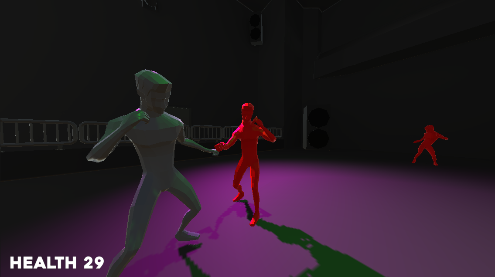

1 / 5

The Main Menu
2 / 5
Level 1: underground base
3 / 5

Level 2: disco
4 / 5
Level 3: prison
5 / 5
Level 4: skyscraper
A game I created entirely by myself, for a module of my studies within 5 weeks.
We had to create a complete game for a module of my studies, which I created in 5 weeks. It was made completely in Unity and most models in blender. Everything except the maincharacter model, the human animations, the music and soundeffects were made by me.
The game itself is about a guy, who punches other guys. It has a small story, but it is rather unimportant.
You can control your character with a controller or mouse & keyboard and let him move, sprint, look on to enemys and punch.
There are 2 different punches, one light, which can be pressed up to 3 times for different follow ups and one heavy punch, which can be charged for more damage.
The enemys use the same model and animations as the maincharacter, because that was the easiest to implement.
Of course in this project, everything was my responsibilty. I am quite happy with the endproduct, especially since this was my first big project completely alone.
I don't think there was a single project where I learned as much, as in this one. Not only the structuring and managing of this project, but also the whole workflow which comes with working alone.
In this project I also learned, that I really like programming stuff similar to this. From the easy combat system, to the save system or even the aiming at enemies with the camera were all new things, I really liked doing.
I also learned, that schedules rarely work, when you never did anything like this. This was obvious, when I had like 3 days for all the graphics, which I have actually planned to take about 2 weeks.
The game is available to download at itch.io, but the site itself is not really good designed.